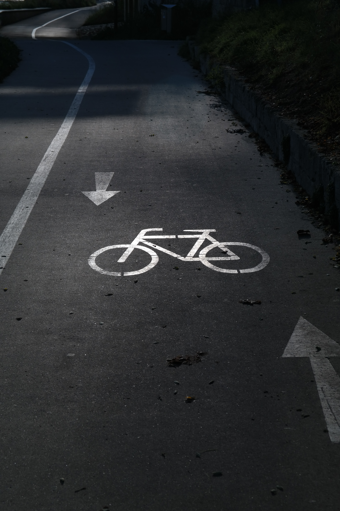

Times when I am free
When I have free time for only myself my favorite activities to do is:
- Reading books. My passion is books. No matter it is hard-cover, paper-cover or e-book I will read it
- Bicycling I love to ride with bicycle. Because I live near Palanga, Lithuanian summer capital, I can go there by bike every day. 
- Watching TV series Most people enjoy watching movie, but for me movie has not any sequence like TV series. I really like to wait what my beloved characters going to investigate next week.